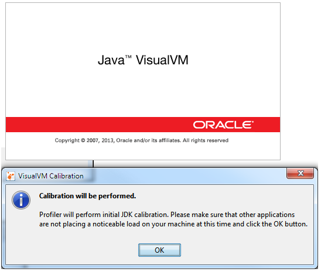
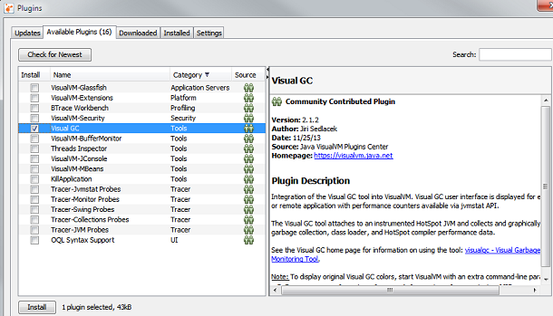
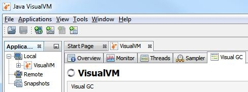
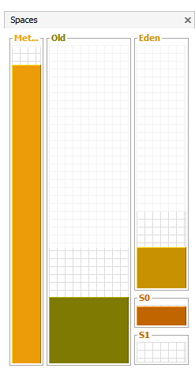
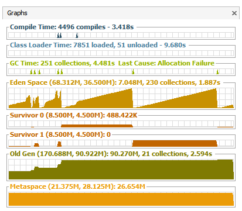
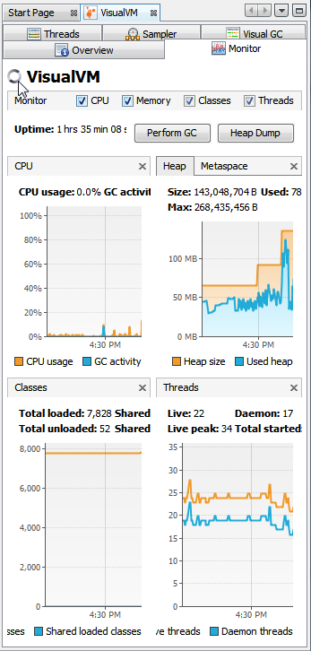
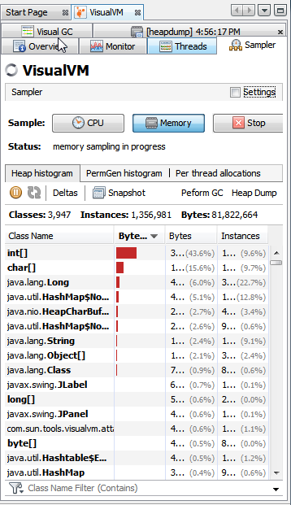

Java垃圾回收机制四 Monitoring and Analyzing Java Garbage Collection
在这篇Java垃圾回收系列文章中，让我们看下一些监控和分析垃圾回收的工具。然后用工具尝试监控和分析一个例子。初学者最好先看下此系列,从Java 垃圾回收简介开始吧。
Java垃圾回收监控和分析工具
下面是一些监控工具，它们有各自的优缺点。我们可以通过选择恰当的工具做一些有序的分析工作来提升应用性能。这篇文章将从Java VisualVM开始讲起。
- Java VisualVM
- Naarad
- GCViewer
- IBM Pattern Modeling and Analysis Tool for Java Garbage Collector
- HPjmeter
- IBM Monitoring and Diagnostic Tools for Java – Garbage Collection and Memory
- Visualizer
- Verbose GC Analyzer
Java VisualVM
Java VisualVM是在Java SE SDK安装时免费提供的。看下你的Java JDK安装目录下的/bin目录，\Java\jdk1.8.0\bin。此目录下有许多其他工具包括javac和java工具，jvisualvm就是其中一个。
Java VisualVM对运行中的Java应用提供了可视化的信息展示。它是很多工具的整合包，像工具JConsole,jstat,jinfo,jstack以及jmap现在都是Java VisualVM的一部分。
Java VisualVM可以用来
- 生成和分析堆内存的dump
- 观察和操作MBeans
- 监控垃圾回收
- 内存和CPU性能分析
1. Launch VisualVM
jvisualvm已经包含在了JDK的bin目录下,如果以设置环境变量path，则可以直接在命令行中运行jvisualvm，将出现如下启动界面

2.安装Visual GC插件
我们需要安装visual GC 插件才能有个堆Java GC线程的漂亮和有价值的视觉感受。在上面的启动界面中点击工具->插件->可用插件->Visual GC

安装。
3. 监控GC
现在可以监控垃圾回收过程了。开启你的Java应用程序，Java VisualVM会自动检测并将其显示到界面上。在左边“应用程序”面板的“本地”节点下面，所有本地运行的Java应用都会被列举出来。
Java VisualVM自己本身也是一个Java应用程序，因此它自身也被列了出来。作为本文的目的我们将监控VisualVM应用本身的GC过程。
双击“本地”节点下的VisualVM图标。

这样应用程序的监控面板会在右边打开。面板上有多个标签，每个里面展示了与应用程序性能相关的方面。由于我们现在主要关注“Visual GC”，so，点之。

上面的图片显示了Old，Eden，S0，S1使用的内存空间。下面的图表显示了各个部分申请和释放内存的详细信息。它以设定的刷新频率不停地跟新。

上图显示的是一个正常运行的程序。当发生内存泄露或者不正常的操作时，可以从图形本身明显地看出来。至少我们可以知道程序中存在和对象内存分配和垃圾回收相关的问题。然后利用其他标签如“Threads”中提供的信息和Thread Dump我们可以缩小发生问题的范围。
在“监视”标签中，我们可以看到以时间线发展的内存使用概况图。这里有个“执行垃圾回收”按钮可以调用垃圾回收过程。 
在“抽样器”标签中我们可以开始内存和CPU分析工作。抽样器会实时显示各个实例的使用情况。它可以帮助确定性能问题到底发生在哪里。

到此为止，关于Java 垃圾回收的系列文章已经完结了。